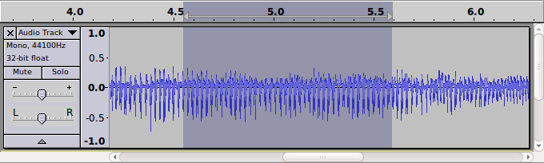
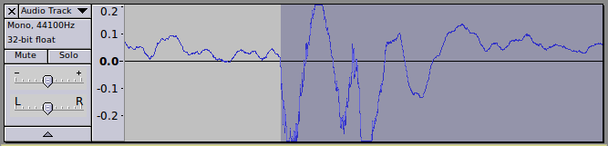
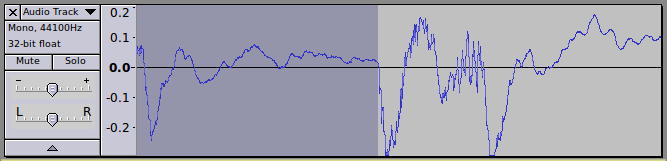
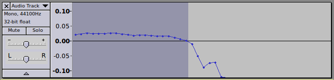

Tutorial - Looping
From Audacity Manual
Contents |
Creating an audio loop
To create an audio loop from an audio track, the first step is to find a suitable section. Ideally the sound will be reasonably constant for as long as possible. Looping is much easier with mono tracks, so if you have a stereo recording but a mono track would be sufficient, the track could first be converted to mono using .
- 
The start of the selection should match (look like) the end of the selection as closely as possible and both selection edges should be positioned so that the blue line of the waveform seems to cross the selection edge at zero amplitude (where the horizontal line appears).
- ( shortcut is CTRL + [ )
- ( shortcut is CTRL + ] )
To look for appropriate loop points, zoom in horizontally on the start of the selection and then on the end of the selection. To zoom, place the mouse pointer at the selection edge and scroll with the wheel or ball. Drag the selection edges leftwards or rightwards as necessary so as to find loop points that have a similar shape, amplitude and slope so that the end of the loop may flow smoothly into the start of the loop. It may also be useful to zoom in on the vertical scale to left of the waveform, as shown in the following images:
- Beginning of the loop selection
- 
- End of the loop selection
- 
To avoid clicks (glitches) it can often help to use so as to ensure the start and end of the selection lie accurately on a zero crossing point. In the image below, the sample at the end of the selection (as shown by the dot) is at 0.0 amplitude according to the vertical scale on the left.
- Zero crossing point
- 
The loop may be tested using Loop Play (SHIFT + SPACE).
Using loops in Audacity
If the loop is to be used in Audacity, the selection may be trimmed: CTRL + T. The loop may be repeated using Copy and Paste, though it is usually more convenient to use the Repeat function: .
Exporting Loops
The selection may be exported using .
The lossless PCM WAV format is the best format for loops. Choose "WAV (Microsoft) signed 16-bit PCM" when exporting. Many lossy, size-compressed formats like MP3, WMA and ADPCM WAV suffer from added silence at the the start or end of the file or other issues that do not respect the exact length.
If a lossy compressed audio format is required then OGG Vorbis may be a better choice as it does not suffer from length issues.
Try:
- http://ibeat.org/ (loops are available under a Creative Commons licence).
- http://www.looperman.com/